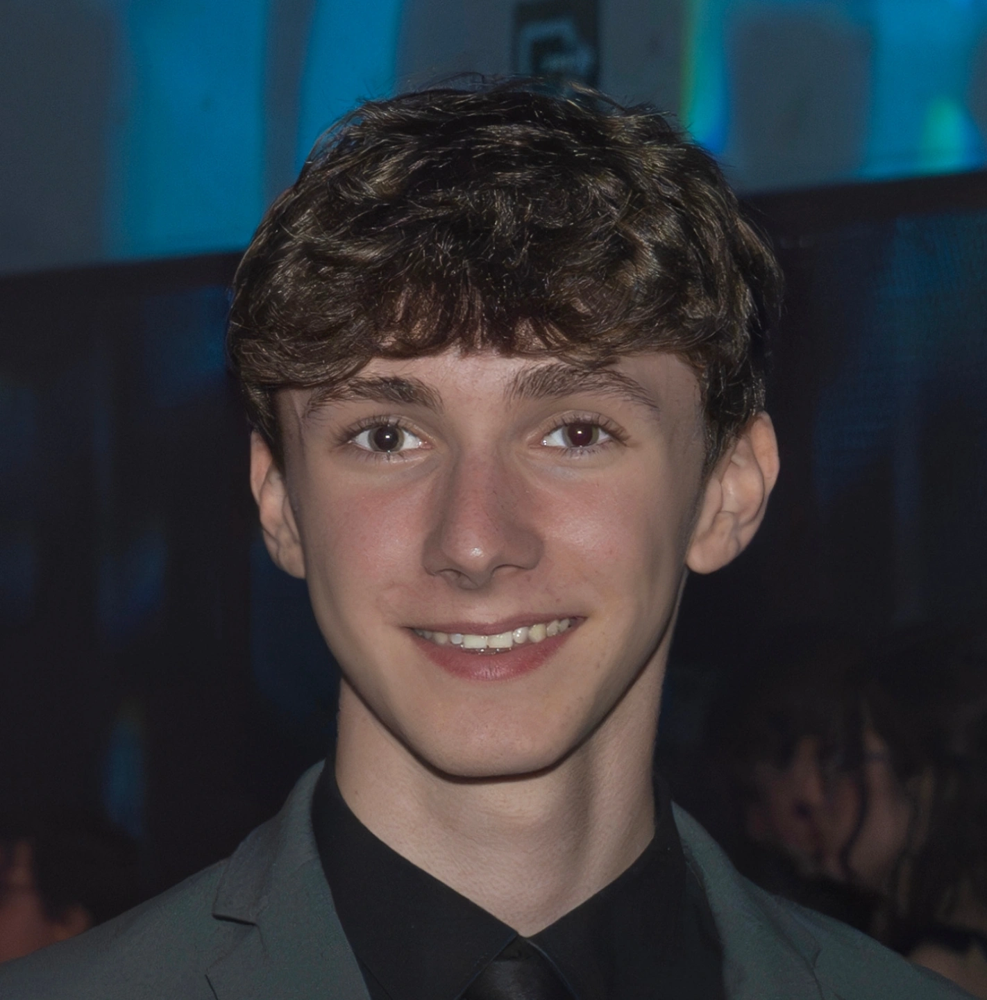

Wie ben ik?
Mijn naam is Wout Van Gansen en ik ben geboren op 27 november
2007.
Momenteel studeer ik graduaat programmeren aan Thomas More in
Lier.
Tijdens mijn opleiding leer ik verschillende programmeertalen en
werk ik aan projecten waarbij ik websites en toepassingen
ontwikkel.
Ik ben geïnteresseerd in technologie en computers en vind het leuk
om
nieuwe dingen te leren binnen de IT-wereld. Vooral het maken van
websites en het oplossen van programmeerproblemen spreken mij
aan.
In mijn vrije tijd werk ik graag verder aan mijn
programmeervaardigheden en probeer ik mijn kennis verder uit te
breiden. Met dit portfolio wil ik laten zien aan welke projecten ik
werk en welke vaardigheden ik aan het ontwikkelen ben.

Waar ben ik goed in?
Ik haal voldoening uit het oplossen van complexe problemen en het
vinden van creatieve oplossingen voor uitdagingen.
Mijn werk is georganiseerd en nauwkeurig, maar ik blijf flexibel
wanneer projecten nieuwe wendingen nemen.
Samenwerken in een team inspireert me, omdat de beste resultaten
ontstaan wanneer ideeën worden gedeeld en gecombineerd. Ik focus op
het goed toepassen van de technologieën en kennis die ik al beheers,
en streef er altijd naar om projecten tot een kwalitatief hoogstaand
resultaat te brengen.
Waar ben ik minder goed in?
Hoewel ik veel vaardigheden ontwikkel, zijn er ook gebieden waar ik
nog aan werk. Ik kan soms te lang blijven hangen in details, waardoor
ik trager vooruitga dan nodig is.
Ook vind ik presenteren of spreken voor een grotere groep uitdagend,
maar ik oefen actief om hierin meer zelfvertrouwen te krijgen.
Daarnaast kan ik af en toe te veel op mezelf focussen en vergeet ik
soms hulp of feedback van anderen te vragen, iets waar ik steeds
bewuster op let.
Hobby's/Intresses
Ontdek meer over mijn hobby's en interesses via de navigatiebalk
of door op deze link te
klikken.
Studies
Ontdek meer over mijn studies via de navigatiebalk (CV)
of door op deze link te
klikken.